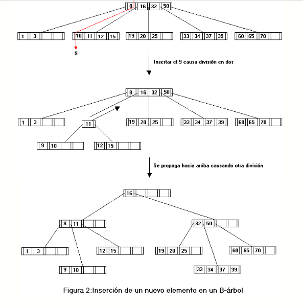
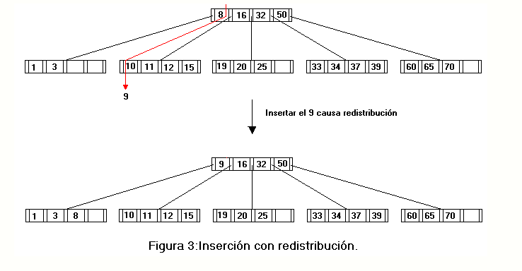

Para insertar una nueva clave usaremos un algoritmo que consiste en dos pasos recursivos:
- Buscamos la hoja donde debieramos encontrar el valor de la clave de una forma totalmente paralela a la búsqueda de ésta tal como comentabamos en la sección anterior(si en esta búsqueda encontramos en algun lugar del árbol la clave a insertar,el algoritmo no debe hacer nada más).Si la clave no se encuentra en el árbol habremos llegado a una hoja que es justamente el lugar donde debemos realizar esa inserción.
- Situados en un nodo donde realizar la inserción si no está completo,es decir,si el número de claves que existen es menor que el orden menos 1 del árbol,el elemento puede ser insertado y el algoritmo termina.En caso de que el nodo esté completo insertamos la clave en su posición y puesto que no caben en un único nodo dividimos en dos nuevos nodos conteniendo cada uno de ellos la mitad de las claves y tomando una de éstas para insertarla en el padre(se usará la mediana).Si el padre está también completo,habrá que repetir el proceso hasta llegar a la raíz.En caso de que la raíz esté completa,la altura del árbol aumenta en uno creando un nuevo nodo raíz con una única clave.
En la figura 3 podemos observar el efecto de insertar una nueva clave en un nodo que está lleno.

Podemos realizar una modificación al algoritmo de forma que se retrase al máximo el momento de romper un nodo en dos.Con ello podríamos vernos beneficiados por dos razones fundamentalmente:
- La razón más importante para modificar así el algoritmo es que los nodos en el árbol están más llenos con lo cual el gasto en memoria para mantener la estructura es mucho menor.
- Retrasamos el momento en que la raíz llega a dividirse y por consiguiente retrasamos el momento en que la altura del árbol aumenta.
La forma más sencilla de realizar esta modificación es que en el caso de que tengamos que realizar esa división,antes de llevarla a cabo,comprobemos si los hermanos adyacentes tienen espacio libre de forma que si alguno de ellos lo tiene se redistribuyen las claves que se encuentran en el nodo actual más las de ese hermano m&as la clave que los separa(que se encuentra en el padre)más la clave a insertar de forma que en el padre se queda la mediana y las demás quedan distribuidas entre los dos nodos.
En la figura 3 podemos observar el efecto de insertar una nueva clave en un nodo que está lleno pero con redistribución.
